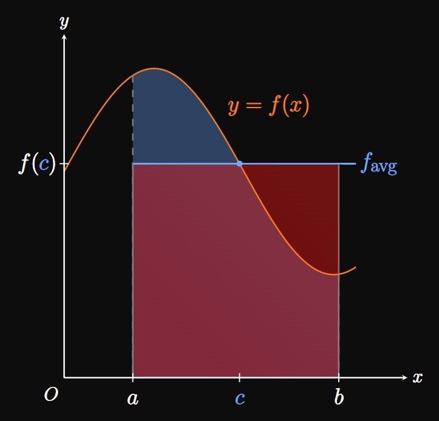

0 Preliminaries

1 Limits and Continuity

2 Differentiation Rules

3 Applications of Differentiation

4 Integration
5 Applications of Integration

6 Integration Techniques
7 Further Applications of Integration

8 Differential Equations

9 Parametric Equations, Vector Functions, and Polar Coordinates